観光スポット 全15ヶ所
清風苑ゆらからの車での所要時間付き。ここから好きに組み合わせよう

❶ 浪合パーク（星空鑑賞）
リクライニングチェアで寝転んで満天の星。20:00〜ガイド付き45分。曇天時はスクリーン上映。キャンセル当日15時まで無料。
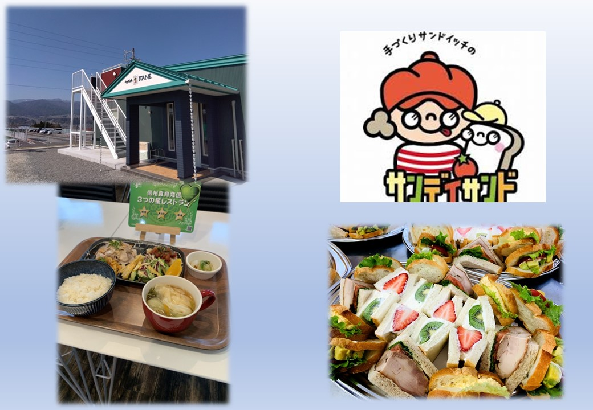
❷ たかぎ村いちご狩り
章姫・紅ほっぺ・ゆめのか食べ比べ。高設栽培で立ったまま収穫。ベビーカーOK。現金のみ。
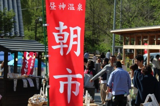
❸ 昼神温泉朝市
約20店舗。清内路の寄せとうふは土日限定100パック即完売。フルーツトマト（ソムリエサミット2位）も。
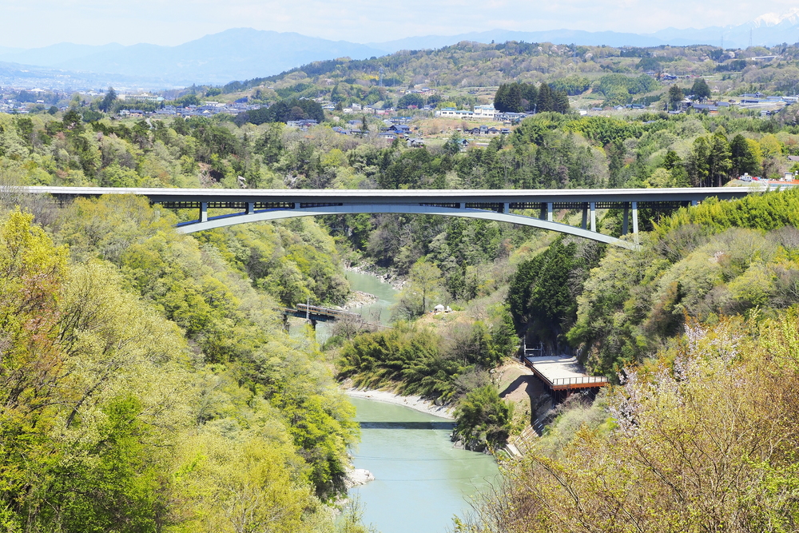
❹ そらさんぽ天龍峡
天龍峡大橋の下の歩道。80m下に天竜川とJR飯田線。揺れないので安心。ナビは「天竜峡PA」で。
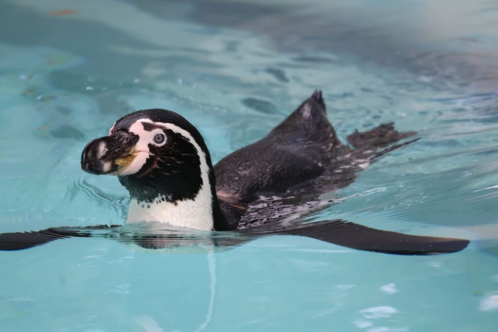
❺ 飯田市立動物園
ペンギン・ワラビー約60種。ふれあい広場で小動物を触れる。ミニSL「弁慶四世号」。コンパクトで疲れない。
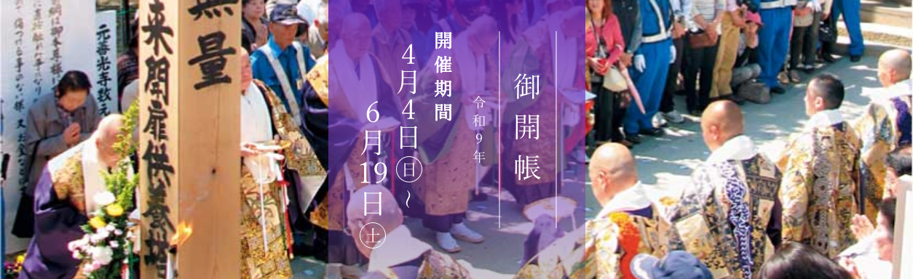
❻ 元善光寺
善光寺の御本尊が最初に安置された寺。地下の完全暗闇を手探りで歩く「お戒壇めぐり」は忘れられない体験。
❼ 川本喜八郎人形美術館
三国志・平家物語の精巧な人形200体以上。飯田動物園のすぐ近くでセット可能。
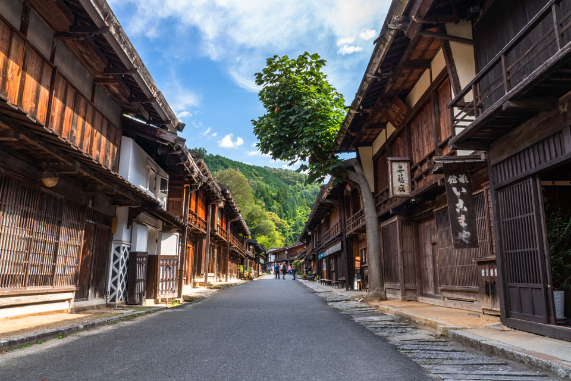
❽ 妻籠宿
格子戸の家並みが完全保存。五平餅5店舗（200〜250円）の食べ歩き。10-16時歩行者専用。3月は空いていて◎。
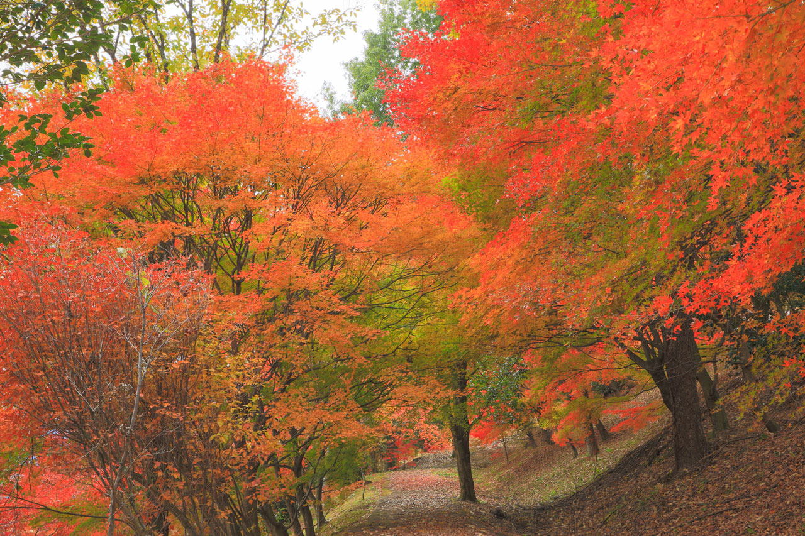
❾ 馬籠宿
坂道に並ぶ店が美しい。栗きんとん・五平餅が名物。馬籠は五平餅9軒で食べ比べ可能。
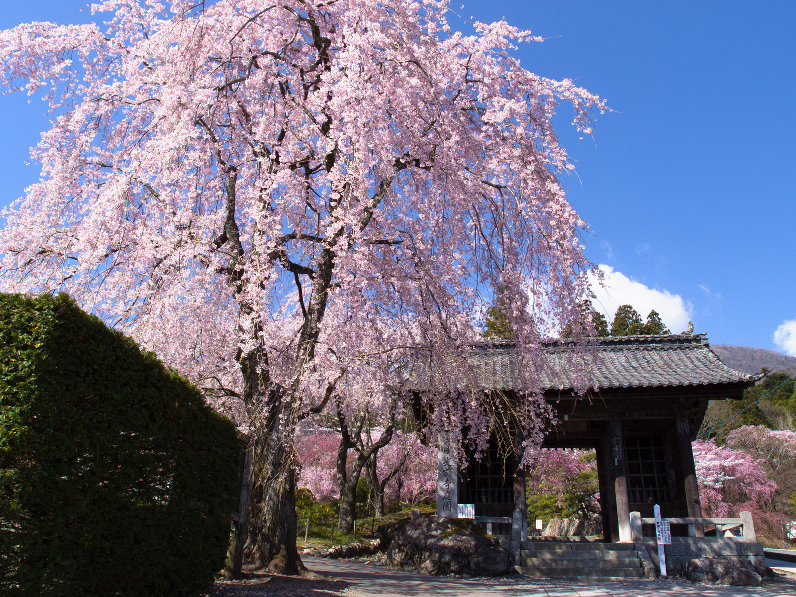
❿ 光前寺
化け物を退治した犬「早太郎」の伝説が有名。石垣に光苔（ヒカリゴケ）が自生。杉並木が壮観。駐車場200台無料。
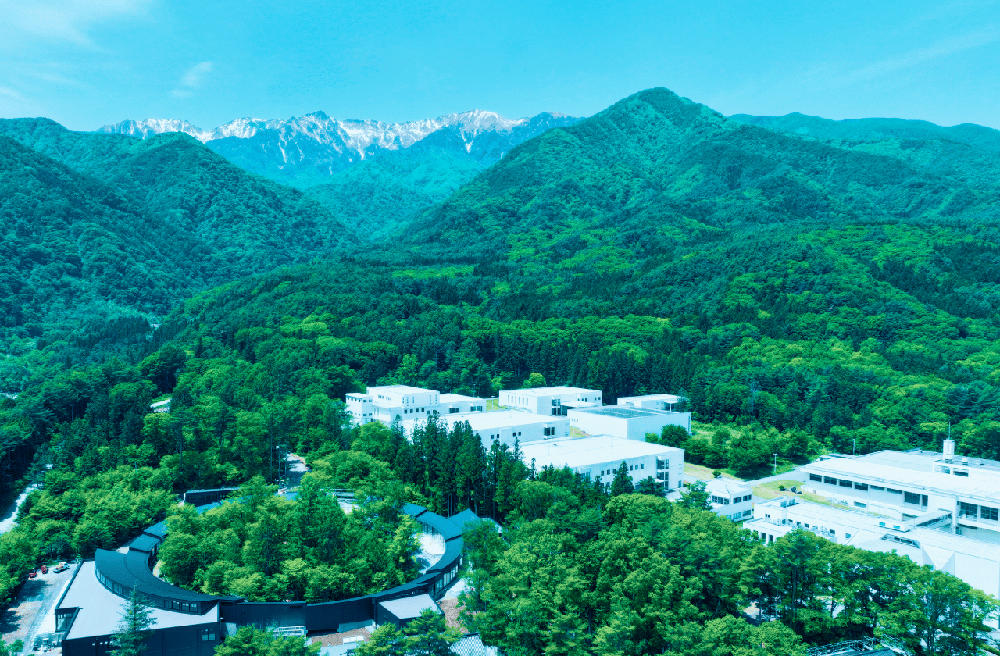
⓫ 養命酒 駒ヶ根工場
森の中の工場見学。映像シアター。併設カフェ「くらすわ」のスイーツが絶品。土曜営業（水曜定休）。
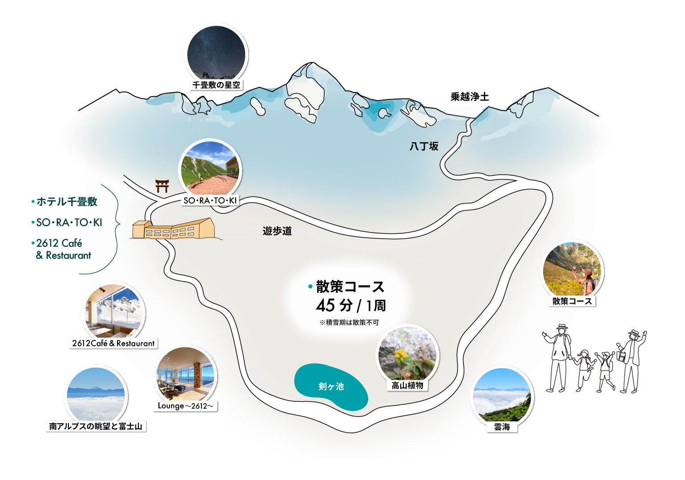
⓬ かんてんぱぱガーデン
伊那食品工業の本社。寒天ゼリー・ドリンクの無料試食が大量。工場見学も無料。併設そば店で昼食も可。
⓭ みはらしファーム
農業公園。そば打ち・パン作りなど30種の体験。10:00と13:00の2回。☎0265-74-1807。
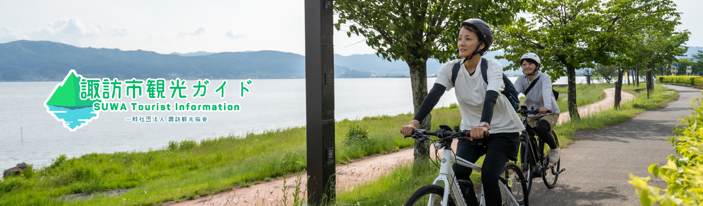
⓮ 諏訪大社 下社秋宮
全国1万社の諏訪神社の総本社。高さ17mの御柱。諏訪湖SAからすぐ降りて10分。御朱印集めは6年生に◎。
⓯ SUWAガラスの里
長野最大のガラス美術館。キャンドル作り・アクセサリー作りなど手作り体験が豊富。諏訪湖眺望。